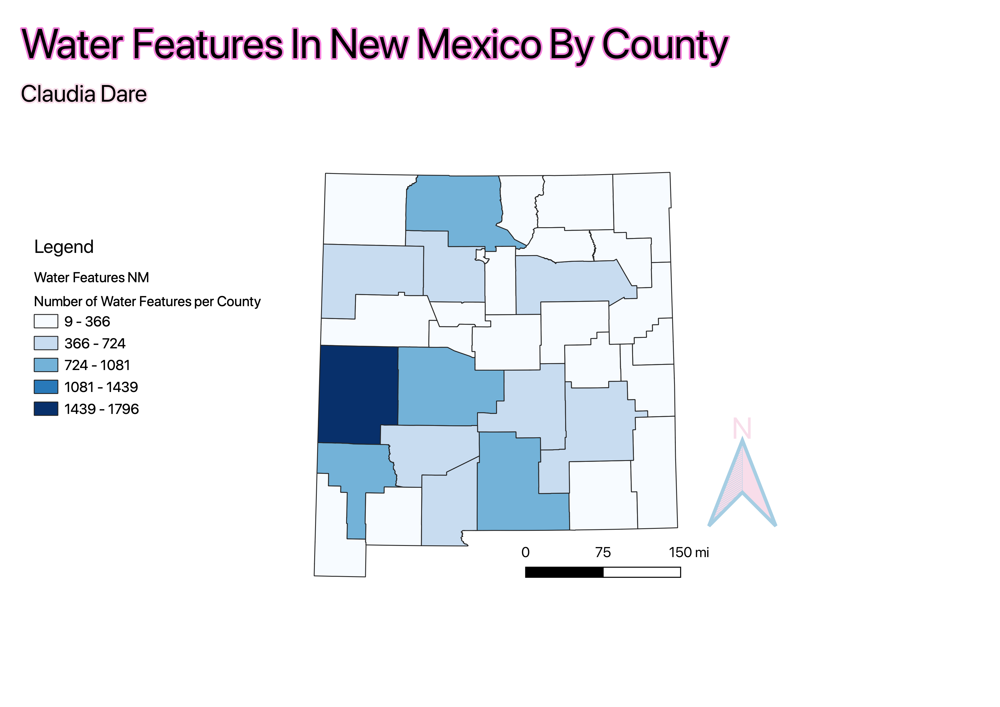

Homework 7: Make a Choropleth or Proportional Symbol Map
Claudia Dare
This map shows the number of water features per county of New Mexico where water features include but are not limited to swamps, resivours, rivers, streams etc. This Choropleth is done with equal interval classes. I selected this topic because I thought it would be interesting to see if there were areas of the state that lacked water features since states in the West tend to go through droughts much more than the East of the United States. This map could be improved if it took into account the size of each county, I didn't do this as the area of the counties was not provided in either table that I joined and I honestly did not want to find a 3rd table with that data. I used the color blue for the Choropleth as it felt an approprate color to represent water features.

Data used for this project
CSV Dataset Download Site
Link to Vector File
Cleaned CSV File